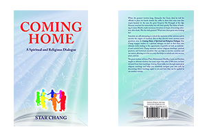

- 
Star Chang
A Spiritual and Religious Dialogue
When the greatest Western king, Alexander the Great, died, he told his officials to place his hands outside the coffin to show that even a man dies empty-handed. In the East, the great Emperor Shi Huangdi of the Qin Dynasty searched for immortality but still died quietly. The father of banking, Cosimo Medici, made enormous donations in hopes of receiving salvation after death. Was his wish granted? What were these great men looking for?
Scientists are still attempting to unlock the mysteries of the universe and to uncover the origins of mankind. But as they discover more answers, more questions arise. In Coming Home, a Spiritual and Religious Dialogue, Star Chang engages readers in a spiritual dialogue on how to find their own ultimate truth, leading to the opportunity of growth on both an individual and societal level. Chang examines various religious teachings, spiritual practices, and historical narratives that can help us uncover ourselves and our nature, allowing us to live in a way that helps us to unlock our own success, peace and joy.
The great teachers of Jesus, Plato, Muhammad, Buddha, Laozi, and Krishna taught us ultimate wisdom, but may argue that after 2,500 years we have deviated from their teachings. Coming Home walks you through many the great religious teachings and helps you intuitively navigate your own path by discovering what teachings apply to you and how they can be applied in our modern society.
Chapter 2 Risk and Return
John: The gap between the rich and the poor is rapidly widening. Of course, because we like to talk about civilization in the modern age, what we used to call an unequal distribution of wealth, we award a much more elegant name.
Robert: John is basically talking about the “free market.” Behind this society, there exists an invisible hand that constantly manipulates. The government cannot intervene and people naturally move in a direction that benefits them. When a certain industry or place is deemed advantageous, people naturally turn toward it, until the gains no longer exceed the costs and they turn to some other money-making business. That’s what the free market is. Don’t you agree?
John: The people who should be responsible shove their responsibility onto the innocent. Does this make sense? This is very unfair. I think it’s time we review the merits of capitalism. Adam Smith’s An Inquiry into the Nature and Causes of the Wealth of Nations should be updated.
Chase: That’s not entirely true. Without the advocacy of Adam Smith, not everybody has a chance. Star: Do you realize that while people worship Smith’s An Inquiry into the Nature and Causes of the Wealth of Nations like the Bible, others noted that before Smith wrote Inquiry he published The Theory of Moral Sentiments. This work was published seventeen years before Inquiry and is widely considered a culturally significant piece that comes hand in hand with Inquiry. He believed in limits and regulations in everything that we do. If society is to survive, we cannot do whatever we want. There must be universal justice and three layers must limit individual desires: law, compassion and morality, and religion. Adam Smith, the father of modern economics, believed justice was the pillar of society. .......Smith published both treatises, but why does the world only remember one and not the other?
........Money became an instrument for measuring personal worth. The accumulation of wealth became the ultimate life goal, thereby inspiring some to sacrifice others for their own personal values in exchange for wealth. This has become a belief preached all over the world. In reality, if people truly knew harm always ricochets back to its source, they would never do it in the first place. Robert: When did you become an ethicist?
Star: I have no interest in ethics. I am talking about investment decision making.
Robert: Investment decision making? Are you kidding? I don’t understand how that’s related to ethics.
Star: I’m serious. I am simply reminding people that when people make a decision on investments, they fail to consider some vital factors. If they considered them, they would refrain from doing certain things.
Robert: What factors?
Star: Let me first ask you a question. you are an expert at calculating and investment decision making. When you’re making investments, what is the most important factor to consider?
Robert: Of course the ideal is to make the maximum return with minimum risk. If an investment has high risk and low return, I would never go near it. That is the most important factor to consider when making an investment.
Chapter 7 The Cause of Bitterness
John: Living in this world is not an easy task. People frequently face all kinds of trials and tribulations. Actually, I think I’m a decent person. I don’t do wrong and follow the rules. Why do people like me still suffer?
Star: In modern society, we experience happiness or pain because we have been living in a community since birth. There are many layers to societies. In life, I’ll meet all kinds of people and have all kinds of experiences. Some will make me feel happy, and some will make me feel pain. Some I’ll like, and some I’ll hate. This is why I feel joy and sorrow, which can be roughly divided into three kinds. In other words, there are three bonds that trap me and prevent me from escaping. The first is the bond of relationships or emotions.
Why am I in my current state? Why are my parents, spouse, partner, children, friends, acquaintances, or even enemies in their current state?
It’s as if I am in the center of a circle. Outside of me are layers upon layers of relationships spreading from the inside to the outside forming a network. In the circle closest to me are the people I am most intimate with, including my parents, spouse, partner, children, and close friends. On the outside of this inner circle are my ordinary friends: my acquaintances, coworkers, and friends from school or the community. On the outermost circle are the people I do not associate myself with. The closer to the core they are, the more intimate our relationship. The farther they are, the more distant. These are the people that are bound to me by emotions.
An intimate relationship is not necessarily a positive one. This relationship is one that forms the strongest emotional bond of love and hate. Due to the strong feelings of love and hate, I am in my current state and bound tightly to the people in my innermost circle. It is both a bond of sweetness and pain. Some people blame having these bonds for various reasons, but regardless of whether or not they were intended, they are what they are.
This network of relationships is constantly changing. It will expand and shorten or relax and constrict in our life journey depending on our perspective, decisions, and actions. In this web of relationships my parents, spouse, partners, and children are the people I spend the most time with in this life. They are also the closest to me emotionally. No matter whether or not I like it or understand the reason, they are the closest. Sometimes we hear people say: “I love this person, and I hope to spend my entire life with him” or “I hate this person, and I hope I never see him again in my life.” We even hear something along the lines of “even though he is my relative, I don’t feel close to him at all and can easily ignore his existence.” These are the emotions that bind us. The more I love someone, the closer they are to me. Similarly, the more I hate someone, the closer they are.
Our relationships are like knots. When a number of knots intertwine with each other, it makes bonds. Or it is like a spider web and we are at the center. The majority of us have similar knots or web structure. Some are simple and some complex.
Chapter 17 Jesus
Christina: If someone has not been baptized then he can’t be a Christian, and if he is not a Christian then how could he possibly be a disciple of Jesus? If he is not a Christian, he cannot go to Heaven.
Star: Do you love God?
Christina: Of course!
Star: Christians say, “God loves all people.” you only love God and Christians. Is there any inconsistency?
Christina: Ah!
Speaking of God’s love, if I help the needy, then God will love me. But my brothers and sisters all enthusiastically go to the aid of the needy, so I’m worried that God will not notice anything that I do, and will bestow his love on others.
Star: Do not worry. God knows everyone, even in the smallest or subtlest thought. And God is love and endless. God will not give others more and give myself less.
Hope: Unless I am perfect, God will not permit me to enter Heaven, so I must keep trying until I reach perfection.
Star: What is perfection? The perfection of yesterday is the non-perfection of today. And today’s perfection will be tomorrow’s non-perfection. So, when can we achieve perfection? An absolute morality does not exist in this world. Thus, trying to reach absolute morality is like perfection, we will never reach that point in this world. Good and evil are oneness. Without evil, where is good? It’s better that I do my good and do not blame the other’s evil.
Hope: Good and evil are one? This reminds me of something in the Old Testament. Before Adam and eve ate the Forbidden Apple, God said that there was no distinction on earth between Good and evil, and people lived in Heaven.
It seems that I understand something, but it is rather vague. No matter what, I am going to love and help people with my whole heart and soul. At the same time, I’m not going to blame others for their evil deeds. I will honor God. I will honor the Cross of Christ.
Star: The Cross has very special and important meaning.
Christina: If someone has not been baptized then he can’t be a Christian, and if he is not a Christian then how could he possibly be a disciple of Jesus? If he is not a Christian, he cannot go to Heaven. Star: Do you love God?
Christina: Of course!
Star: Christians say, “God loves all people.” you only love God and Christians. Is there any inconsistency?
Christina: Ah!
Speaking of God’s love, if I help the needy, then God will love me. But my brothers and sisters all enthusiastically go to the aid of the needy, so I’m worried that God will not notice anything that I do, and will bestow his love on others.
Star: Do not worry. God knows everyone, even in the smallest or subtlest thought. And God is love and endless. God will not give others more and give myself less.
Hope: Unless I am perfect, God will not permit me to enter Heaven, so I must keep trying until I reach perfection.
Star: What is perfection? The perfection of yesterday is the non-perfection of today. And today’s perfection will be tomorrow’s non-perfection. So, when can we achieve perfection? An absolute morality does not exist in this world. Thus, trying to reach absolute morality is like perfection, we will never reach that point in this world. Good and evil are oneness. Without evil, where is good? It’s better that I do my good and do not blame the other’s evil.
Hope: Good and evil are one? This reminds me of something in the Old Testament. Before Adam and eve ate the Forbidden Apple, God said that there was no distinction on earth between Good and evil, and people lived in Heaven.
It seems that I understand something, but it is rather vague. No matter what, I am going to love and help people with my whole heart and soul. At the same time, I’m not going to blame others for their evil deeds. I will honor God. I will honor the Cross of Christ.
Star: The Cross has very special and important meaning.